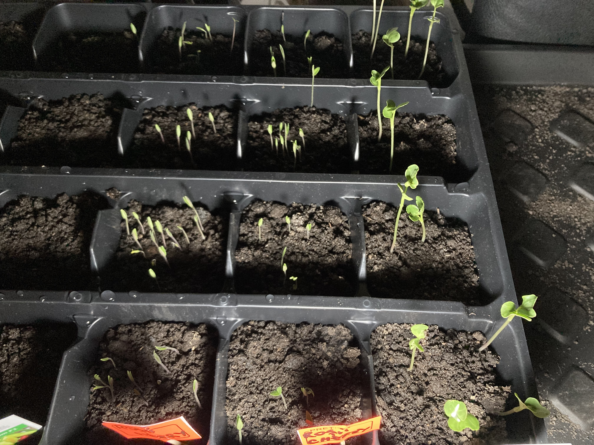
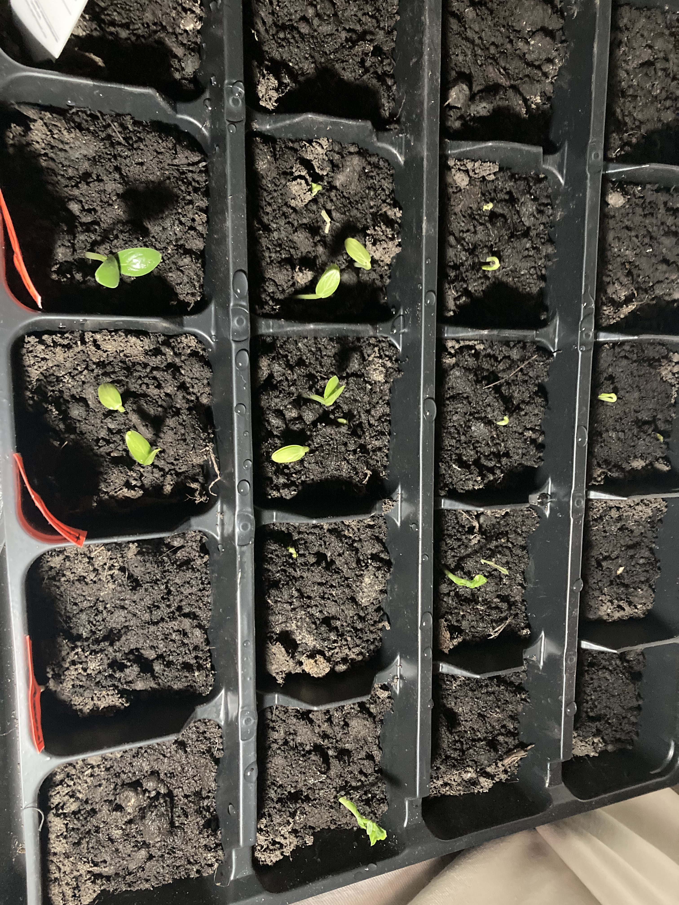
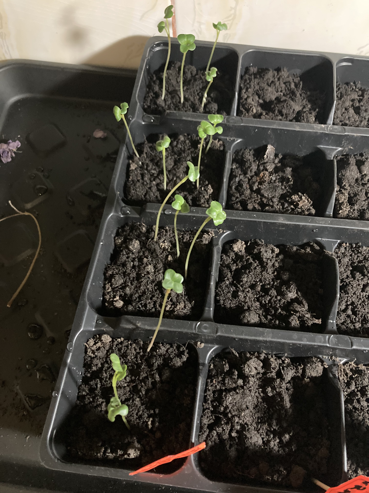

Plantutele de ridiche deja sunt foarte mari, au in jur de 7-8 cm.
Ieri (20 februrarie) am sesizat cum apareau mici plantute la suprafata pamantului de rosii cherry, castravete si mazare.
Astazi sunt deja crescute foarte mult, au deja cativa cm.
La vinete am vazut doar ceva mic, aproape insesizabil, la kapia este o singura plantuta, dar seamana cu cea de rosie si ma gandesc sa nu fie o seminta intrus, in rest nicio miscare la pepene galben, patrunjel si lalele.
Le-am udat, pamantul la suprafata era uscat, am udat si patrunjelul si lalelele.
  